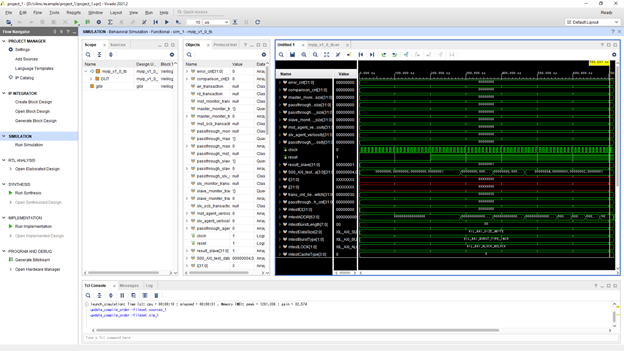
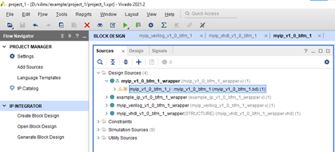
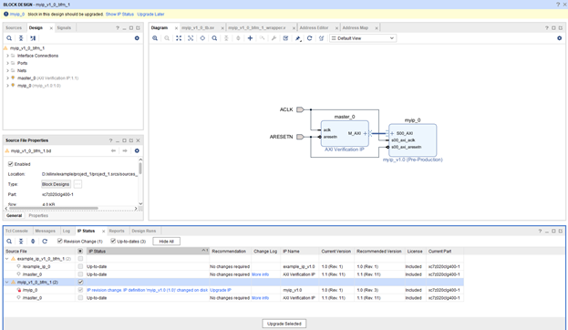
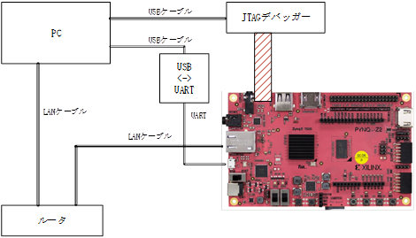

Vivado
1. Vivado
1.1. การส ร้าง AXI IP ของตัวเอง
1. เปิด Vivado และสร้างโปรเจกต์ ในครั้งนี้จะสร้างโปรเจกต์ตัวอย่างชื่อ project_1
2. สร้าง IP
คลิกที่ Tools -> Create and Package New IP
เลือก Create a new AXI4 peripheral
กำหนดชื่อ IP ที่เหมาะสม ในครั้งนี้จะสร้างเป็น myip
สามารถเพิ่มอินเทอร์เฟซ AXI ในส่วน Interface และตั้งค่าจำนวนรีจิสเตอร์ได้ ในครั้งนี้จะสร้างเป็น IP อย่างง่ายโดยใช้การตั้งค่านี้ (AXI lite)
หากเลือก Verify Peripheral IP using AXI4 VIP ระบบจะสร้างสภาพแวดล้อมการจำลองให้โดยอัตโนมัติ
เมื่อตั้งค่าสภาพแวด ล้อมแล้ว การจำลองจะถูกสร้างขึ้นดังภาพด้านล่าง

จากนั้น IP Catalog จะมี myip_v1.0จะถูกเพิ่มเข้าไปด้วย
※ หากต้องการเปลี่ยน IP สำหรับการจำลอง ให้คลิกขวาที่ไฟล์จำลองภายใต้ Simulation Source ใน Sources แล้วเลือก Set as Top จากนั้นคลิกขวาที่ Sim_1 ใน Sources แล้วเลือก Run Simulation -> Run Behavioral Simulation
1.2. การแก้ไข IP ที่สร้างขึ้น
ไฟล์ HDL ของ IP ที่สร้างขึ้นโดยอัตโนมัติจะถูกบันทึกไว้ที่ ./ip_repo/myip_1.0/hld
เป็นตัวอย่าง จะทำการเพิ่มพอร์ตเอาต์พุต myip_out โดยเพิ่มเอาต์พุตในโมดูลของ myip_v1_0_S00_AXI.v ดังนี้
※ ภาษา HDL ที่จะสร้างขึ้นจะแตกต่างกันไปขึ้นอยู่กับการตั้งค่าโปรเจกต์ของ vivado สามารถตั้งค่าได้ที่ Settings -> General -> Target language
จากนั้น เพิ่มพอร์ตเอาต์พุต myip_out ในโมดูลของ myip_v1_0.v ดังนี้
ในช่อง IP catalog ให้คลิกขวาที่ myip_v1.0 แล้วเลือก Edit in IP Packager
คลิก OK ไปได้เลย
จากนั้น หน้าต่าง vivado อีกอันจะเปิดขึ้นมาโดยอัตโนมัติ คลิกที่ Ports and Interface แล้วคลิกที่ Merge change from Ports and Interface Wizard
คลิกที่ Review and Package แล้วคลิก Re-Package IP เพื่ออัปเดต IP จากนั้นปิด Vivado ที่ใช้แก้ไข IP แล้วกลับไปที่โปรเจกต์ Vivado หลัก
ดับเบิลคลิกที่ myip_1_0_bfm_1_i ใน Sources ของ Block design

คลิกที่ Show IP Staus แล้วทำการ Upgrade myip_v1_0_bfm_1

จากนั้นพอร์ต myip_out จะถูกเพิ่มเข้ามา คลิกขวาที่ myip_out แล้วเลือก Make External

เพื่อรีสตาร์ทการจำลอง ให้คลิกขวาที่ sim_1 ใน Sources แล้วเลือก Run Simulation -> Run Behavioral Simulation
จากนั้น myip_out จะถูกเพิ่มเข้าไปใน myip_v1_0_bfm ของ DUT
1.3. การแก้ไข Testbench
Testbench สำหรับการจำลองถูกเขียนไว้ใน project_1\project_1.srcs\sim_1\imports\bfm_design\myip_v1_0_tb.sv หากเพิ่มคำสั่ง Read และ Write ต่อไปนี้ลงในไฟล์ จะสามารถแก้ไขลำดับการจำลองได้
mst_agent_0.AXI4LITE_WRITE_BURST(32'h00000000, 0, 32'h12345678, mtestBresp );
mst_agent_0.AXI4LITE_READ_BURST(32'h00000000, 0, mtestRDataL, mtestRresp );
1.4. การเชื่อมต่อกับ Zynq
คลิกที่ IP INTEGRATOR -> Create Block Design
ตั้งชื่อ Block design ในครั้งนี้จะตั้งชื่อเป็น design_1
คลิก ADD IP แล้วเพิ่ม zynq
คลิก ADD IP แล้วเพิ่ม myip

เชื่อม ต่อ Block (หากคลิก Run Connection Automation ระบบจะเชื่อมต่อให้โดยอัตโนมัติ แต่หลังจากเชื่อมต่อแล้วควรตรวจสอบอีกครั้ง)
ใน Block ของ myip ให้คลิกขวาที่ myip_out แล้วเลือก Make External ระบบจะสร้างพอร์ตออกไปด้านนอก Block โดยอัตโนมัติ
กำหนดตำแหน่งแอดเดรส ของ myip ใน Address Editor
ใน Design Sources ของ Sources ให้คลิกขวาที่ design_1 แล้วเลือก Create HDL Wrapper เพื่อสร้าง wrapper ของ Block design โดยอัตโนมัติ
สร้าง ไฟล์ TOP ของ FPGA และเชื่อมต่อกับ Block design ที่ถูก wrapper ไว้ ในครั้งนี้จะสร้างไฟล์ prj_top.v เป็นไฟล์ TOP
เพิ่ม prj_top.v เข้าไปใน Vivado จากนั้นใน Sources -> Design Sources -> prj_top ให้คลิกขวาแล้วเลือก Set as Top
1.5. การจำลอง IP โดยใช้ Zynq VIP
สร้าง Testbench ด้วย zynq_tb.v (โปรดดู example.zip ที่แนบมา)
การ ทำงานของ Zynq VIP คือ
กรณี เขียนข้อมูลจาก Zynq ไปยัง IP
ใช้ xxx.inst.write_data(32'h43C0_0000,4, 32'h12345678, resp);
กรณี อ่านข้อมูลจาก IP มายัง Zynq
ใช้ xxx.inst.read_data(32'h43C0_0000,4,read_data,resp);
(xxx จะเปลี่ยนไปตามลำดับชั้นของดีไซน์ ในดีไซน์นี้คือ
tb.prj_top_u.design_1_wrapper_u.design_1_i.processing_system7_0 です。)

1.6. การดีบักบนอุปกรณ์ จริง
Vitis IDE
จริงๆ แล้ว ตอนที่ทำ 1.1การส ร้าง AXI IP ของตัวเอง Vivado จะสร้างซอร์สโค้ดตัวอย่างดังต่อไปนี้โดยอัตโนมัติ
เลือก Include bitstream
ตั้งค่า Worksapce
คลิก Next ไปได้เลย
คลิ กที่ Create a new platform from hardware(XSA) แล้วใช้ Browse เพื่อเลือกไฟล์ .xsa ที่สร้างไว้ก่อนหน้านี้ จากนั้นคลิก Next
ระบุชื่อแอปพลิเคชัน แล้วคลิก Next
คลิก Next ไปได้เลย
ในครั้งนี้เป็นการทำงานกับรีจิสเตอร์อย่างง่าย จึงเลือก Empty Application(C)
#INCLUDEFILES=*.h
#LIBSOURCES=*.c
#OUTS = *.o
INCLUDEFILES=$(wildcard *.h)
LIBSOURCES=$(wildcard *.c *.cpp)
OUTS = $(addsuffix .o, $(basename $(wildcard *.c)))
OBJECTS = $(addsuffix .o, $(basename $(wildcard *.c *.cpp)))
ASSEMBLY_OBJECTS = $(addsuffix .o, $(basename $(wildcard *.S)))
1.7. การตรวจสอบ IP ด้วย Chipscope
รัน SYNTHESIS หนึ่งครั้ง
จากนั้น คลิกที่ SYNTHESIS -> Open Synthesized Design -> Set Up Debug
คลิ กที่ Find Nets to Add ค้นหาสัญญาณที่ต้องการจับแล้วลงทะเบียน
ในช่อง Clock Domain ของแต่ละสัญญาณ ให้คลิกขวาแล้วเลือก Sampling Clock
จากนั้น รันไปจนถึง Run Implementation และ Generate Bitstream
คลิก Open Target แล้วคลิก Auto Connectคลิก Program device เพื่อกำหนดค่า FPGA ทางฝั่ง PL ของ zynq
ตั้งค่า Trigger setup เช่นเดียวกับ Logic Analyzer
ทำ การ Run เมื่อตรวจจับ Trigger ได้ รูปคลื่นจะแสดงดังภาพด้านล่าง
1.8. Advanced trigger
【เคล็ดลับการตรวจสอบ FPGA】ลองใช้ Vivado™ Logic Analyzer ให้เป็นประโยชน์ (วิธีใช้ Advanced trigger) ~ฉบับเตรียมการและภาพรวม~
https://www.paltek.co.jp/techblog/techinfo/231127_01
1.9. แนะนำสภาพแวดล้อม Jupyter สำหรับการดีบัก IP ที่สร้างเองบนอุปกรณ์จริง
การดีบัก IP ที่สร้างเองบนอุปกรณ์จริงจำเป็นต้องมี U-Boot หรือซอฟต์แวร์ดีบัก แต่การสร้างซอฟต์แวร์ดีบักนั้นต้องมีการเตรียมการหลายอย่าง ในครั้งนี้จะขอแนะนำวิธีการดีบักอย่างง่ายโดยใช้สภาพแวดล้อม Jupyter
「Jupyter Notebook」 คือสภาพแวดล้อมที่สามารถพัฒนาซอฟต์แวร์บนเว็บเบราว์เซอร์ได้ (ส่วนใหญ่อยู่ฝั่ง PC) แต่ในกรณีของอุปกรณ์ Zynq จะมีโปรเจกต์ที่ชื่อว่า PYNQ ซึ่งเป็นเฟรมเวิร์กสำหรับใช้ FPGA ด้วย Python โดย Linux จะทำงานบนฝั่งโปรเซสเซอร์ (PS) ของ Zynq และ Jupyter จะทำงานบนนั้น ทำให้สามารถกำหนดค่าฝั่ง FPGA (PL) ด้วย Python ผ่านเว็บเบราว์เซอร์ได้
บอร์ด ที่รองรับสภาพแวดล้อม PYNQ มีระบุไว้ที่ http://www.pynq.io/board.html
การตั้งค่าสภาพแวดล้อมมีดังนี้: ให้บอร์ดที่ต้องการดีบัก (Zynq） อยู่ในเครือข่ายเดียวกับ PC ผ่านเราเตอร์ จากนั้นเชื่อมต่อ JTAG debugger จาก PC ผ่าน USB เข้ากับพินดีบักของอุปกรณ์ Zynq และเชื่อมต่อคอนโซล Linux กับ PC ผ่าน UART

วิธี การดีบัก
1．เปิดเครื่องบอร์ดที่ต้องการดีบัก แล้วรอจนกว่า Linux จะบูตเสร็จ จากนั้นพิมพ์ ifconfig เพื่อตรวจสอบ IP ของ Zynq (ตัวอย่าง: จะได้ IP เช่น 192.168.1.55)

2．เปิดเบราว์เซอร์บน PC แล้วป้อน IP ที่ได้รับมา (เพื่อเข้าถึง Zynq) หน้าจอเริ่มต้นจะต้องการรหัสผ่าน ให้ป้อน “xilinx”
3．กลับไปที่ Vivado แล้วคลิก Program device เพื่อกำหนดค่า FPGA ทางฝั่ง PL ของ zynq
4．กลับไปที่หน้าจอ Jupyter แล้วคลิก New → Python3
5．ใส่สคริปต์ดังต่อไปนี้ เพื่อให้สามารถเข้าถึงรีจิสเตอร์ฝั่ง FPGA (PL) ได้อย่างอิสระ
Mmio = pynq.MMIO ใช้สำหรับตั้งค่าแอดเดรสและพื้นที่การเข้าถึงของรีจิสเตอร์
mmio.write คือการเข้าถึงรีจิสเตอร์เพื่อเขียนข้อมูล
mmio.read คือการเข้าถึงรีจิสเตอร์เพื่ออ่านข้อมูล
※ สามารถตรวจสอบรูปคลื่นด้วย chipscope เพื่อดูว่ามีการเข้าถึงรีจิสเตอร์จริงหรือไม่

※ ในกรณีที่พัฒนาบอร์ดเอง จำเป็นต้องทำการพอร์ตเพื่อให้สามารถใช้สภาพแวดล้อม Jupyter ได้ ซึ่งการพอร์ตนั้นใช้เวลา แต่ถ้าทำสำเร็จแล้ว จะสามารถเข้าถึงรีจิสเตอร์ได้อย่างอิสระด้วยสคริปต์ Python ตามวิธีที่แนะนำไปข้างต้น ทำให้การดีบักฮาร์ดแวร์สะดวกขึ้นมาก
1.10. อื่นๆ 1：การ นำบัส AXI ออกไปนอก Block design
เพื่อเพิ่มพอร์ ตสำหรับบัส AXI master ให้เพิ่มจำนวน Master Interface ของ AXI Interconnect (เปลี่ยนจาก 1 เป็น 2)
ในครั้งนี้ เพื่อให้ได้ AXI Lite ออกมา จะทำการเพิ่มการแปลงจาก AXI เป็น AXI Lite ด้วย AXI Protocol Converter
ดับเบิลคลิกที่ AXI Protocol Converter แล้วตั้งค่า Address width ในครั้งนี้จะตั้งเป็น 12bit
คลิกขวาที่ M_AXI ของ AXI Protocol Converter แล้วเลือก Make External
จากนั้น บัส M_AXI_0 จะส่งสัญญาณออกไปนอก Block design
ตั้งค่า Address Map สำหรับบัส AXI (M_AXI_0) ที่จะส่งออกไปข้างนอกใน Address Editor
เพื่อนำสัญญาณ CLK และรีเซ็ตออกไปนอก Block design พร้อมกับบัส AXI ให้สร้างสัญญาณ CLK และรีเซ็ต โดยคลิกขวาบนหน้าจอ Block design แล้วเลือก Create Port
ตั้งค่าสัญญาณ CLK และรีเซ็ตดังนี้
เมื่อคลิก Validate Design จะเกิดข้อผิดพลาดดังภาพ (ข้อผิดพลาดที่ว่าบัส M_AXI_0 ไม่มี CLK ที่เกี่ยวข้อง)
เพื่อแก้ไขข้อผิดพลาด ให้คลิกที่ M_CLK_0_CLK แล้วในส่วน CONFIG ของ Properties ให้ระบุ M_AXI_0 ใน ASSOCIATED_BUSIF จากนั้นเมื่อทำการ Validate Design อีกครั้ง ข้อผิดพลาดจะหายไป
คลิ กขวาที่ design_1_i แล้วเลือก Create HDL Wrapper
จากนั้น สัญญาณของบัส A_AXI_0 จะปรากฏขึ้นดังนี้
เชื่อมต่อ กับ AXI IP ที่สร้างเองในไฟล์ top ของโปรเจกต์
เพิ่มการเข้าถึงแบบเขียน/อ่านใน Testbench ของการจำลองไปยังตำแหน่งที่แมป M_AXI_0
เมื่อทำการจำลอง จะสามารถตรวจสอบ AXI IP ที่สร้างเองได้